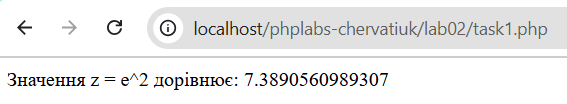
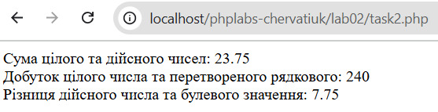

Лабораторна робота №2
Тема: Основи роботи з PHP
Виконавець: Черватюк Юлія Василівна
Група: KN1-B22
Варіант: 10
Дата виконання: 18.03.2025
Завдання
Завдання 1
Напишіть PHP-скрипт, який обчислює значення виразу: z = e^x, де x = 2.
Перейти до розв’язку

Завдання 2
Напишіть PHP-скрипт, який демонструє використання змінних різних типів у математичних обчисленнях з перетворенням типів.
Перейти до розв’язку
